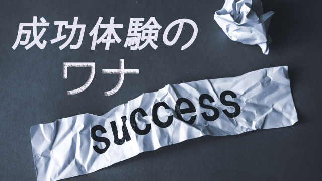

先日小中学生の子をもつお母さん方数人と話す機会があった。話題は子どもの教育についてでどのような家庭教育をすべきか色々な疑問や悩みについて話し合ったわけだが、あるお母さんから次のような興味深いエピソードを聞いた。
そのお母さんによれば何でも「子どもたち全員（3人か4人？）を東大に合格させた母」という人の講演会を聞きに行ったという。そこでその東大ママは子どもの合格は「母親しだい」と豪語（⁉）し子どもたちが晴れて東大生になるためにどんな家庭教育をしたか、母親としていかに子どもたちを導いたか自己の体験を熱く語ったという。
講演会は盛況で多くの親が会場を埋め尽くしたとか。この東大ママは有名らしく最近メディアにもよく登場しているようだ。
私は直接聞いたわけではないので彼女の「子どもを東大へ入れる方法」の真偽は分からない。子どもの合格は母親しだいというフレーズも内容が分からないのでコメントできないが、親が特定の目的（この場合は合格）のために我が子を強力にコントロールするというところに違和感を覚えた。
仮に一時的にうまくいったように見えても人が人を完全にコントロールし続けることはできない。
私は職業柄、支配的な親に育てられた子どもが長い期間に渡ってその影響力から離脱するのに苦しむ例を数多く見てきた。有名大学に受かれば良いという話ではない。まことにお節介ながら私は当の子どもたちが少し心配になった。
さて、今回話したいのは東大ママのことではなく「我が子の合格」にせよ事業での成功にせよ、金持ちになる方法にせよ他人の成功体験を真に受けることの注意点というか危険についてである。
まず、人はどうして成功体験を聞きたがるのかということ。その心理は「成功者」の体験を聞くことで自分たちもあやかりたい、何とか秘訣のようなものを聞いて今後の参考にしたいということではないだろうか。さらに意地悪く言うなら、お手軽にそのエッセンスを効率良く手中にしたいという思いではないか。
だがそれはうまく行かない。成功体験はあくまでその人自身の話であって皆が形だけ同じことをしてもうまく行くことはあり得ないからだ。
体験をなぞるだけでは役に立たない
多くの人はものごとを因果的にとらえてしまう。○○をした（原因）から△△という結果（成功）があるというように。しかし原因と結果はそのように一対一で対応していない。つまりひとつ一つの出来事は単独で存在しているわけではなく他の要素と複雑に絡み合って現象化している。
たとえば一輪の花が咲くには、水や土や太陽さらには虫の死骸などの養分が必要だ。それら一見バラバラの要素が絶妙のタイミングで組み合わさって初めて花という結果が結実する。水だけ土だけ太陽光線だけ単独で取り出しても花にはならない。そしてそれらの要素もまた他の要素が寄り集まった「結果」として出現している。
つまり一つの結果（成功）とは、様々な要素が網の目のように折り重なった末の一個の結節点として浮かび上がったようなものである。
要するに一つの結果には無数の背景があり、それらの背景（網の目）は個々人によって皆違っているということ。だから成功者の体験をそのままなぞっても自分なりに応用しなくては再現性ある方法にはなり得ない。成功体験をマネしても成功できないということだ。
私も経験あるが、たとえばあるときAという生徒にBという指導をしたら一気に成績が伸びたから、次も他の生徒に同じ指導をしてもまったく効果がなかったりする。当たり前だが生徒の性格や能力、家庭環境やタイミングという背景抜きに同じ方法を使ってもムダである。相手の状況に応じてアプローチを変えなければならない。
だが、あるやり方で劇的成功を収めてしまうと人はそのやり方に固執してしまいがちだ。成功者が成功体験ゆえに失敗することがあるのもそのためだ。
ましてや話をちょっと聞いたり本を読んだだけで成功者の方法を手っ取り早く習得できると考えるのは極めて危険だし安易すぎると思う。
では成功体験はまったく役に立たないのかと言うならそうではなく、成功者の語る体験をそのまま取り入れるのではなくいったん抽象化した上で、自分の置かれている状況に置き換えて自分なりの考えや行動に落とし込むことで有用になることがある。自分に当てはめたら「彼」の語る体験はこういう行動になるなという具合だ。想像力と応用力を駆使して自分なりのオリジナルを創り上げる姿勢が要る。
理由とはすべて後づけである
もう一つ。成功体験を真に受けることが危険な理由。それは成功者自身が成功の理由を正しく理解していない、もしくは正確に語れないことにある。
どういうことだろうか。
端的に言えば体験者が語る「成功の理由」はすべて後づけだからだ。先ほども言ったように成功に至る背景は複雑で多様である。
一つの結果は多くの原因（縁）によって生まれているが、それらをすべて説明することはできない。本人も本当のところ何が原因でうまくいったかは理解しておらず、せいぜい印象的な出来事をいくつか記憶の中に並べたて「コレコレがあったからうまく行った」と因果的に説明しているに過ぎない。
そしてここが大事なところだが、成功者は聞いている人を納得させるために「体験」を「物語（ストーリー）」の形に単純化して語らざるを得ないということ。つまり劇的なエピソードを時系列上に並べて分かりやすいストーリーにする。あんなこともあった。こんな苦労もあった。そしてそれらの困難を乗り超えて「今の達成」があるという具合に。
そうしないと聞いている人が納得しないからだ。
しかし事実は「無我夢中でやっていたらいつの間にか成功してしまった！」というのが大半なのだ。確かに苦労もあったし困難もあった。にっちもさっちも行かず絶望の淵に沈みかけたこともあった。
だが、それらも後で思い返してみればそうだったと気がついたに過ぎず、むしろ毎日地道に情熱をこめて目の前のやるべきことをやっていたら結果として―色々な幸運もあり―成功していたが正しい。
実際のところ成功者も一般の人も外面的な日常生活は変わらない。起こる出来事も行動もさして変わりはない。見方によればどんな人もドラマチックな人生を送っていると言えるし、平凡な日常を過ごしているとも言える。楽しいこと嬉しいこと悲しいこと怒ることも一緒。
ではどんな違いがあるのか。
ある成功者はその秘訣を問われて「ぶっちゃけ運です」と答えているのを聞いたことがある。またある有名経営者が「人に恵まれていた。自分は幸運だった」と言い、別の人は「成功は最初から分かっていた」と言っていた。
これら当事者の言葉から分かることは「成功には一般の人々が期待するようなストーリーはない」ということだ。ぶっちゃけ運（笑）という言葉を聞いて人々は納得するだろうか。「運が良かっただけ」などミもフタもないと感じるのではないか。しかしこれは大事な要素だ。
成功する人は総じて強運の持ち主だ。だがそのためには日頃から仕事なら仕事に熱意と誠意をもち、周囲の人を大切にし個人的欲得より全体の利益を考える人でなければならず、そうして初めて「運を味方」にできるのだ。だがそんなことを人前で語ってもつまらない話だろう。ドラマにならない。
成功者のあり方（being）から学ぶ
従って結論的に言うなら、成功体験から学ぶべきは成功者が何をしたか（doing）ではなくどんなあり方（being）をしていたか、そのスタンスであり人生観、世界観、日頃の生き方のほうである。
たとえば成功者のメンタリティの特徴を私なりにあげると次のようになる。
・いったん何かを始めると周囲を巻きこむほどの情熱を込める。
・うまく行ったときのイメージを鮮明にもっていてブレない。
・いまやっていることを楽しんでいる。
・自力ですべてをやろうとせず周囲と協力することを大切にする。
・責任と使命を自覚している。
・損得計算や他者の顔色を気にせずやりたいことやるべきと思ったことをやり切る。
・常識やルールに囚われない柔軟さがある。
このようなメンタリティ（あり方）で毎日を過ごすことで、人々の協力や信頼が生まれ全体が後押ししてくれる。その結果として成功がついてきたという流れなのだ。まさに成功は「流れ」の中に浮かび上がる。あらかじめ計画を立てて遠くに目指すものではない。（もちろん短期的な目標や計画は必要ではあるが）
それよりも目の前にある物事と正面から向き合うこと。決して遠い未来に甘い期待を夢見るのではなく、今ここにある現実そのものを正しく見すえて誠心で対応していく。日常のささやかな出来事の中にも多くの学ぶべきヒントがあることを見逃さない細心さと、時機が来たら大胆に行動する勇気をもつこと。
そしていったん動き始めたら後ろを振り返らず、かつ「これがどこにどうつながるのか」など未来予測もしない。ただひたすら自己を信じ情熱を傾けて突き進む。その際利己的打算より全体が潤うことを念頭に置く。そうすれば協力者が増え奇跡的な幸運も起こり出す。流れに乗ったからだ。そのとき仕事でも勉強でも「楽しんでいる自分」がいることに気づく。
成功者は皆このようなあり方（being）の果てに到達した人たちなのだ。
気がついたら成功していた。始めから成功すると知っていた。これらのセリフは同じことを言っている。一定の方法論などないということだ。